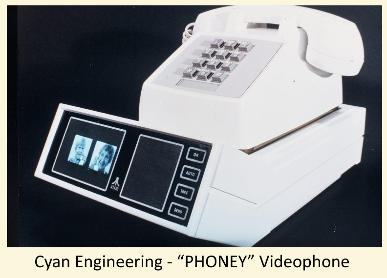

|
Phoney - (aka Eagle Eye)

Watson, come quickly…
oh wait, I can see you!
In 1876 Alexander Graham Bell would make the
historic statement, “Watson,
come here. I need you.”
His assistant, Watson would hear the words come through his prototype telephone
speaker – he
then came into the room where Bell had just spoken into his prototype telephone
microphone. Watson would repeat those words back to Bell and the birth of the
telephone would take place. Within only two years, the imagination of George du
Maurier would sketch a concept of a man sitting, having a conversation with a
woman seen on a projection screen who was also holding a phone and they are
having a visual conversation. By 1910, a French postcard depicting very much
the same scene was created stating that this was what the telephone would be in
the year 2000.
By the late 1920’s
Bell Laboratories is researching video telephone technologies, and in a scene
from the 1927 movie ‘Metropolis’
there is a scene of two men talking on huge wall sized telephone system with a
small video screen so they could see each other while talking through standard
telephone handsets. And by 1956, Bell Laboratories would set up a demonstration
deployment of its ‘Picture-Phone’
between Los Angeles and New York. The system actually required three dedicated
specialized phone lines. One line each for video to New York, and one to Los
Angeles. A third line for the audio conversation was then required and all of
these dedicate lines had to be synced together across the telephone carrier’s
network. The big public awareness of videophones would come at the 1964 World’s
Faire in New York. Demonstrations between New York and Washington DC were
shown. Just as the earlier picture-phone prototypes required three special
dedicated lines, the 1964 system did as well. Bell Labs attempted several
commercial installations of the picture-phone networks into New York, Washington
DC and Chicago. The cost of up to $27 per minute for a call would lead to the
product’s
failure. Despite the real world commercial failure of the picture-phone due to
its specialized infrastructure needs and its overly expensive cost, the public
became captivated by the idea of one day being able to have actual video phone
calls. This would reach new heights as the futuristic cartoon show
‘The Jetson’s’
would air in 1962 and would make video phone calls a common occurrence in almost
every episode.
In 1969, Stanley Kubrick’s
science fiction fantasy ‘2001:
A Space Odyssey’
would also show a very realistic scene of a father placing a video phone call to
his daughter on what the movie would depict as being an AT&T public payphone in
the future. This would be a long distance call as the father would be onboard
an orbiting space station calling his daughter to wish her a happy birthday and
a goodnight back on Earth. AT&T with its research and marketing muscle as well
as large coffers of financial resources to tap into would not give up this
uphill battle to make videophones a commercially viable enterprise. In 1970
AT&T would try to do this once again. In Pittsburgh, Pennsylvania, it would
deploy its Picturephone II system and network. Just as quickly, it would
silently admit defeat and shut it down. The Bell telephone giant would step
back and not make another attempt for almost 15 more years.
Meanwhile in the foothills of the California Sierra
Mountains, back in the Grass Valley Research and Development Lab, in 1976 the
Cyan engineering team begins work on a project called
‘Phoney.’
It’s a
remarkable design for video transmission technology.
“Bear in mind that we
did not have DSP chips and a lot of cheap memory available, so it was a
challenge to do anything practical,”
recalls Larry Emmons. The concept design and ideas are shown to Nolan Bushnell
and Joe Keenan. Joe came up with the idea that this could be an
entertainment-based device, and to perhaps try to design a toy around the
technology and not build something for business or commercial use.
So Larry Emmons, Dave Stokes and Michael Cooper-Hart begin
work on building a simulation prototype. While Larry and Dave worked on the
engineering side, Michael became the Project Concept Manager. He was hired to
do project management and industrial design and to help get projects
(specifically the video project) funded and into production. The video project
needed a kick start and funding.
When he first saw the project in the lab, it was a small 16
x 16 image on a 19-inch open frame monitor. He knew what was needed was a
demonstration prototype and a funding proposal.
A demonstration prototype system would be built, consisting of two desktop base
units that would each be wired across the lab into a card cage system holding
all of the electronics. Since this would be the very early stages of product
development, its physical size and the need to be able to easily pull out a
section to work on, made it a large system requiring a card cage box for all of
the major electronic components to reside in.
The initial prototype didn't actually use a telephone line
but instead just a dedicated wiring system that ran from one office on one side
of the lab floor to another office way on the other side of the lab floor.
However, to make sure that eventually the product could be compatible with the
standard telephone line systems of the day, it was restricted to data rates and
capabilities that were possible at the time (modeling
capabilities after fax machines which were just out and very were expensive).
Larry Emmons and the Cyan team came up with this idea that
telephone conversations had some degree of down time with pauses between words
being spoken where they might be able to insert picture data.
Their test vehicle worked quite well, and the limited resolution photos were
first sent from one end of the link until they were complete and then the
process was reversed.
With this setup, voice had priority over the picture, and the remote photo would
be received line by line during lapses in audio.
One afternoon, Nolan and company travelled to Grass
Valley for a demonstration of the picture phone and to check the status on other
projects (which was a trip they made periodically for this purpose).
When it came time to demonstrate the phone, they had one part of it set up in
the main office, and the second part in a back lab.
Everyone played with it for awhile and had a good time testing it out. Finally
with everyone retiring to the main office, Nolan had abruptly disappeared.
The demo was still active with photos still being exchanged on the device when
Lanny Netz noticed a remotely troubling, but disturbingly familiar object coming
in on the video feed. Larry tried to divert everyone’s
attention from the screen, getting everyone talking while he tried to block the
incoming image by using up all of the priority data transfer. However, the
inevitable occurred. The image would fully process onto the screen for all in
the front office to see…
You guessed it! Nolan had retired to the back room for the sole purpose of
mooning the picture phone audience! Not quite the same historic reverence as
the famous Bell & Watson ‘Come
Here!’ moment
in telephone history, but certainly a memorable, landmark (and classic
‘Atari-style’)
moment for all who were present for this graphic
‘full moon’
eclipse!!!
After the demonstration, Ron Milner (though not involved in
the project) needed a power supply to use elsewhere. The demonstration system
was built into a cage card that had a perfect power supply that he could use.
Ron proceeded to disconnect the power supply to remove it. Unknowingly he let
the 110v hot wire which was still live touch the 5v line on the card cage. Each
of the cards proceeded, almost in a queued fireworks sequence to spark, smoke
and burn out. “It
was quite a fireworks show. Luckily it didn’t
burn the lab down or set off the sprinkler system,”
recalls Ron Milner. As for courting funding from Atari for a project such as
this, Michael became so
successful in
this process that he gained the nickname Michael "Corporate-Hart" of which he
was actually proud to hold the title of. Someone had to help get these great
ideas funded and into production and Michael would become the man behind the
curtain whose job it was to glorify the great work being done by Cyan.
The Falcon…
the Eagle… and
a nest of others”
Work continues on
‘Phoney’
but by 1979, it is relegated to the backburner and then added to a Grass Valley
Project Summaries document under the category,
‘Disasters.’
However in 1981, ‘Project
P’ (as it is
now called) makes a comeback and in the engineering summaries for that year, it’s
noted, ‘try it
again.’ So
work restarts on the video phone system. This may have been prompted by Steve
Bristow’s new
division called ‘Ataritel.’
While the video
phone system from Grass Valley would remain a completely separate project, Steve
Bristow saw it as a logical compliment to the work his new R&D team would pursue
in developing a new line of telephone systems which would provide unique
advanced features that had never before been available in telephone systems.
Hence, Atari’s new ‘Project Falcon’ was born.
|